Nyzo Chrome extension version 4 (commit on GitHub) adds support for automatic transactions.
This version does not place a rate limit on automatic transactions. Support for automatic transactions will not be submitted to the Chrome Web Store until such a limit is in place. To protect yourself if you choose to use this version of the extension, set a very small automatic transaction maximum (such as ∩0.000001) and use an account with a small balance.
In the content script, a listener was added to the document to respond when automatic transactions are generated. When a new transaction is received by the content script, the amount is set, if necessary, and the transaction is sent to the client.
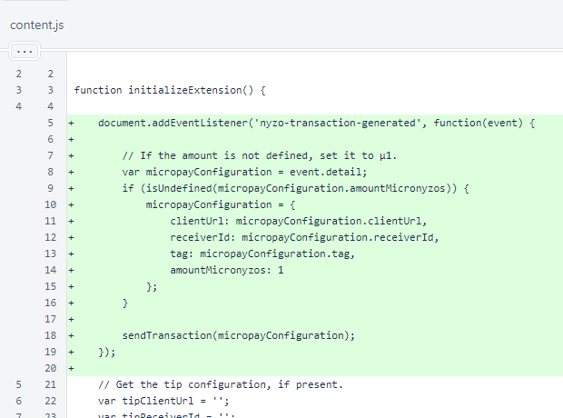The new sendTransaction() function is similar to the sendTransaction() function in the popup script. The parameters are checked to ensure a valid transaction can be built, and the amount is checked to ensure it does not exceed the maximum allowed amount for automatic transactions.
Events are dispatched to indicate success or failure of sending the transaction.
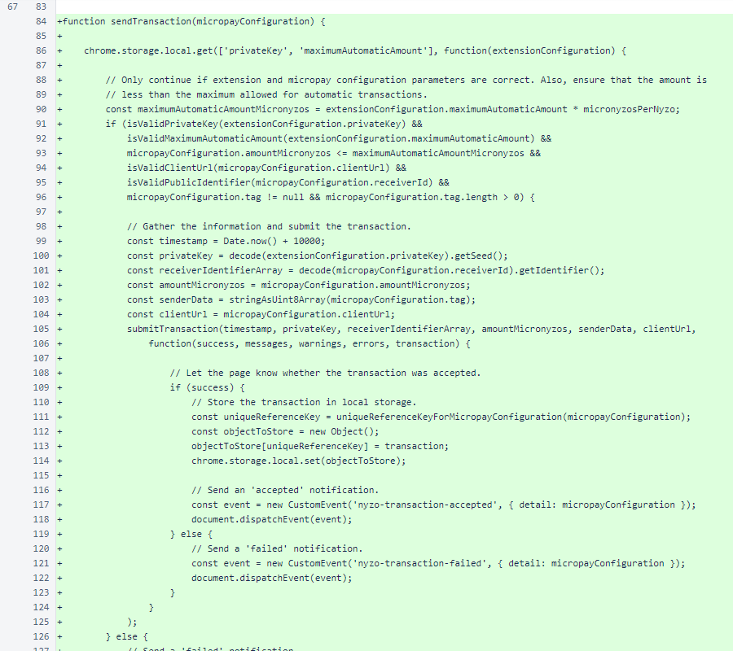A failure event is also dispatched when invalid parameters prevent creation of the transaction.

In extensionUtil, constants were added for the number of micronyzos per nyzo and for the extension parameter names. The micronyzosPerNyzo constant is used in three places in this script to improve readability. The isValidMaximumAutomaticAmount() function was added to support the new maximum-amount parameter for automatic transactions.
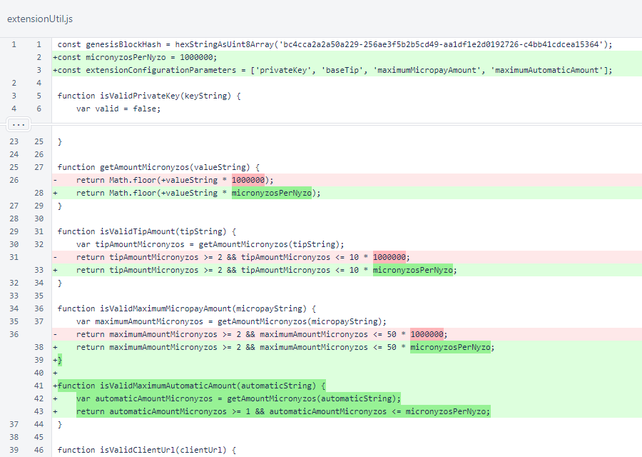The manifest was updated from version 2 to version 3. The change from browser_action to action was required by the new manifest version.
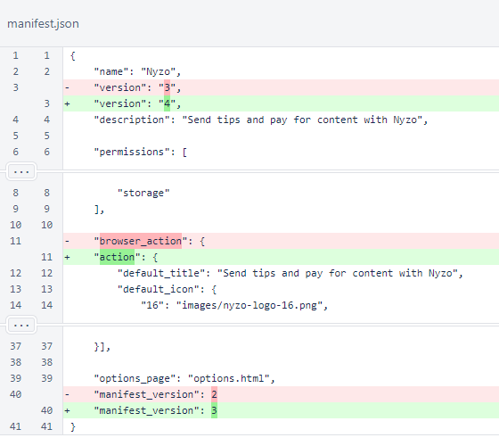The uniqueReferenceKeyForMicropayConfiguration() function was moved to the micropayConfiguration script to allow reuse across more scripts.
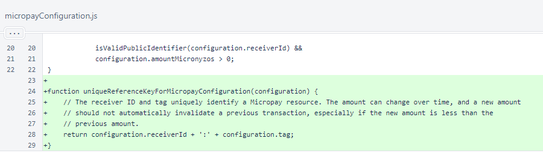The maximumAutomaticAmount field was added to the options menu. The notices were moved under the relevant fields.
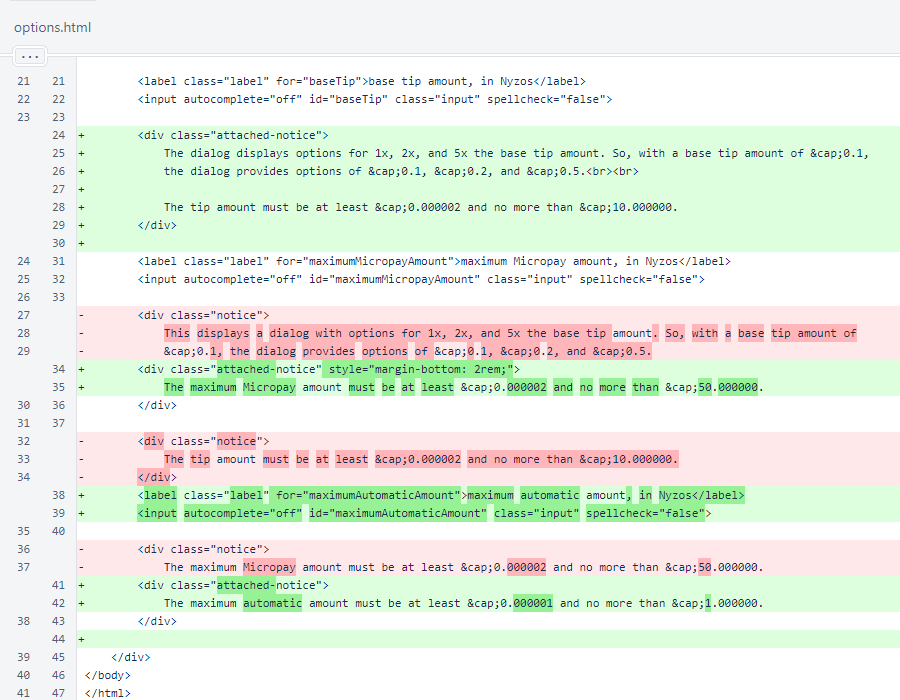In the options script, the new maximumAutomaticAmount field is handled in the same manner as the other fields: a listener is added for validation and storage in response to input, the value is loaded from local storage, and initial validation is performed.
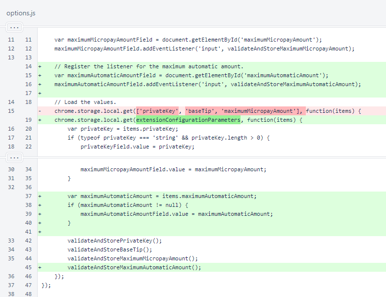The validateAndStoreMaximumAutomaticAmount() function was added to the options script. This function parallels the other validateAndStore... functions.
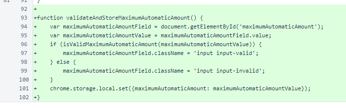The width of 20rem of the popup was changed to a min-width, and a width of 100% was added. This does not change the appearance of the popup on desktop, but it can result in better presentation on mobile.
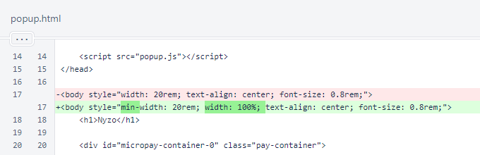In the popup script, the maximumAutomaticAmount is now retrieved from local storage. The extensionConfigurationParameters are used for this. The chrome.tabs.getSelected() function call was replaced with a chrome.tabs.query() function call to support the new manifest version, and an additional block for configuring the popup for an error state was added. The remaining changes are indentation.
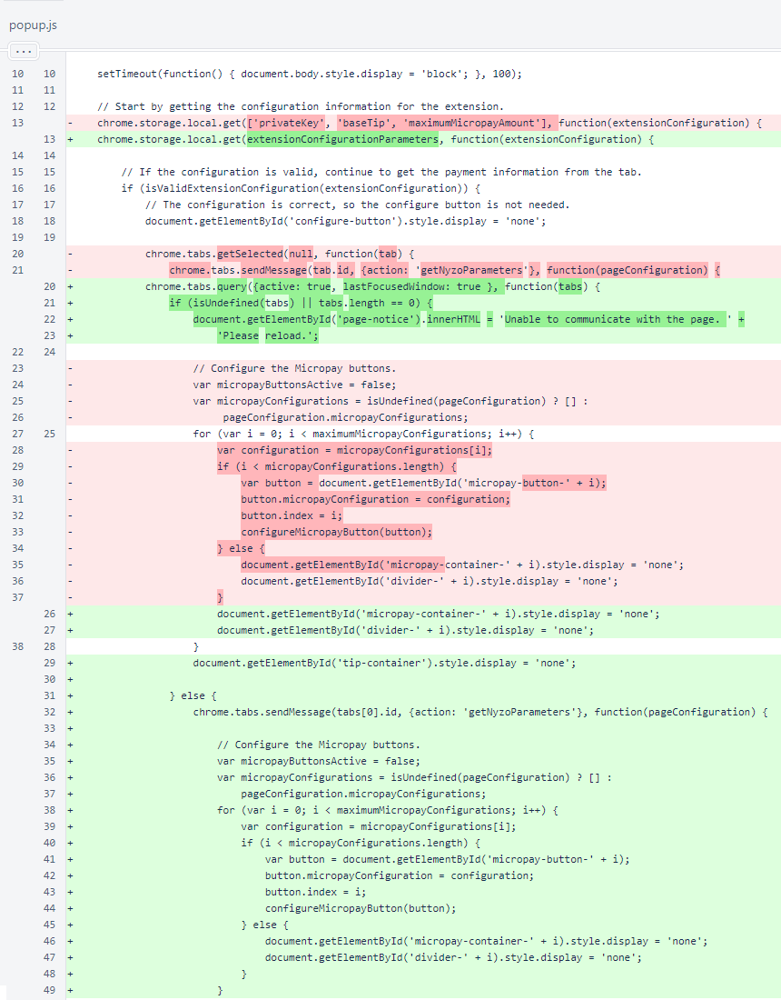The changes to tip button configuration are all due to indentation.
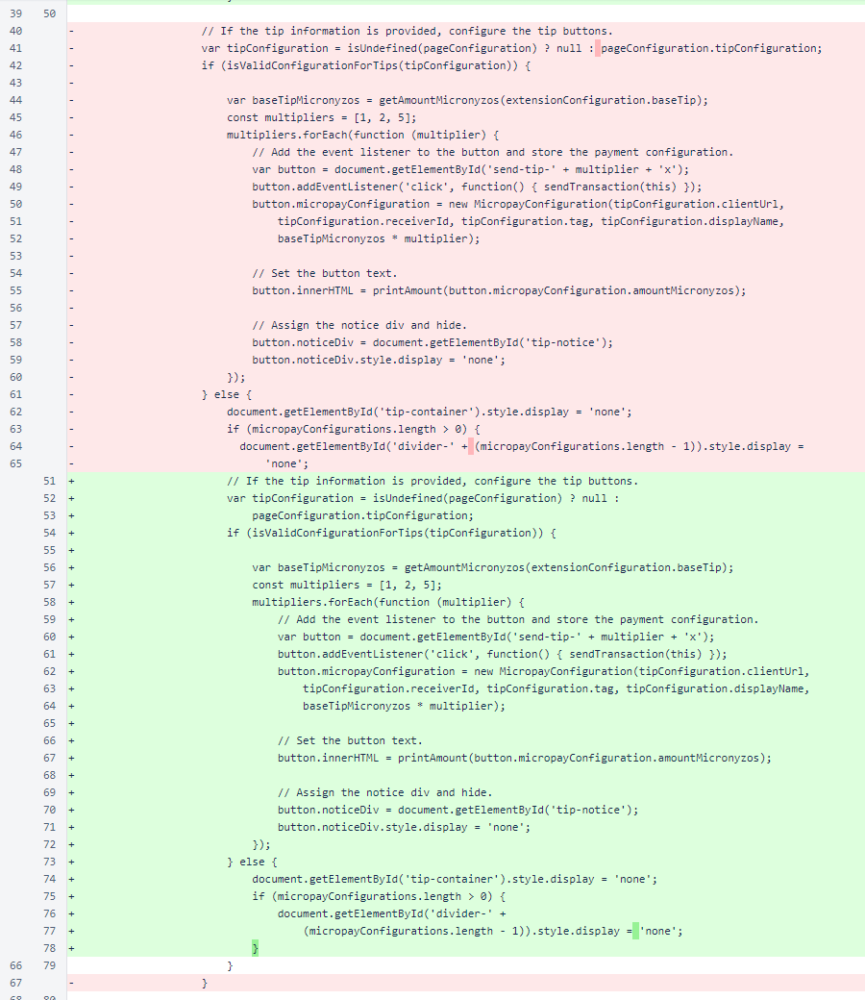Changes due to indentation continue. These are all a result of the additional error handling that was necessary when the chrome.tabs.getSelected() function call was replaced with a chrome.tabs.query() function call. The chrome.tabs.query() function call returns an empty result when the "Inspect popup" extension option is selected from the Chrome context menu, while chrome.tabs.getSelected() returned a valid tab.
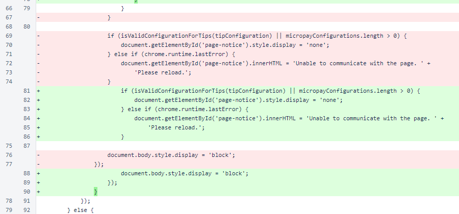The micronyzosPerNyzo constant and extensionConfigurationParameters constant were substituted for readability. A chrome.tabs.getSelected() function call was replaced with a chrome.tabs.query() function call.
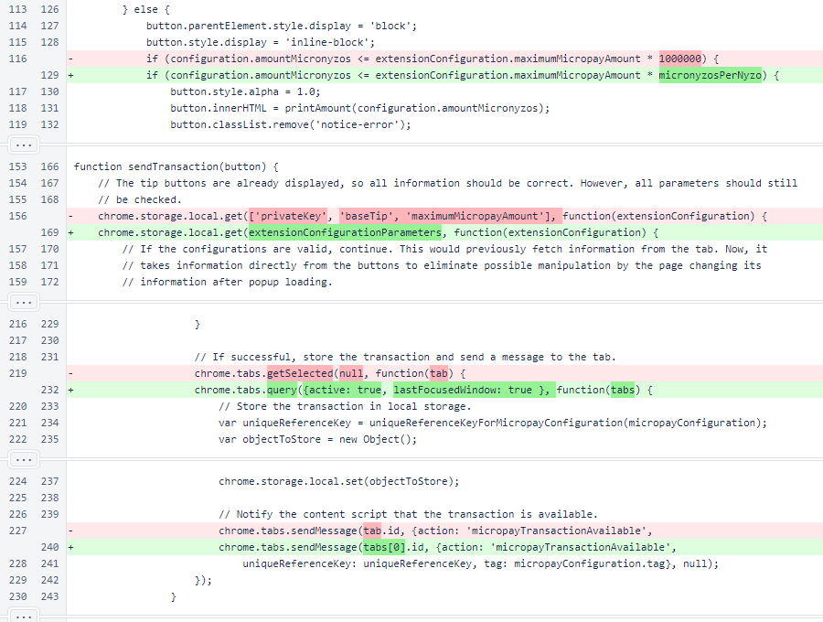Another chrome.tabs.getSelected() function call was replaced with a chrome.tabs.query() function call.
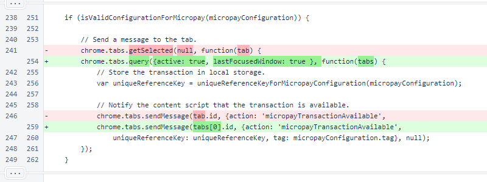In isValidExtensionConfiguration(), the maximum automatic amount is now considered.
The uniqueReferenceKeyForMicropayConfiguration() function was moved to the micropayConfiguration script.
In the openOptionsPage() function, a chrome.extension.getURL() function call was changed to chrome.runtime.getURL() to support manifest version 3.
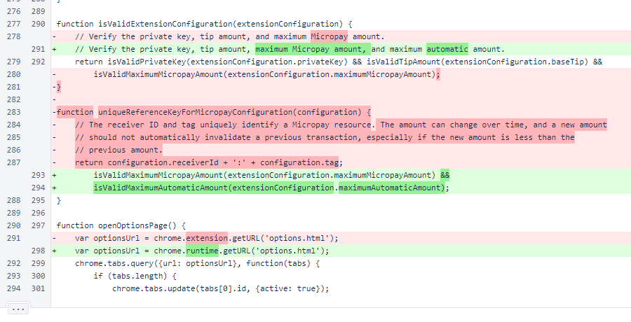The attached-notice CSS class is like the notice class, but it uses a negative top margin to appear connected to the element above it.

The new attached-notice class is shown below in the options menu.
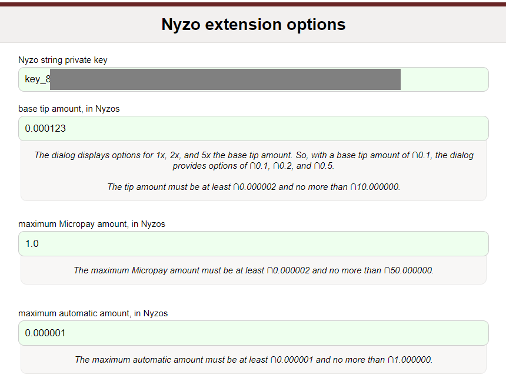If you load this version of the extension and open the Micropay game example, you can see automatic transactions in action. The following table shows how the table on the game example should appear if the extension is configured correctly for automatic transactions. Note: this is just an example, and the extension is not used by these release notes.